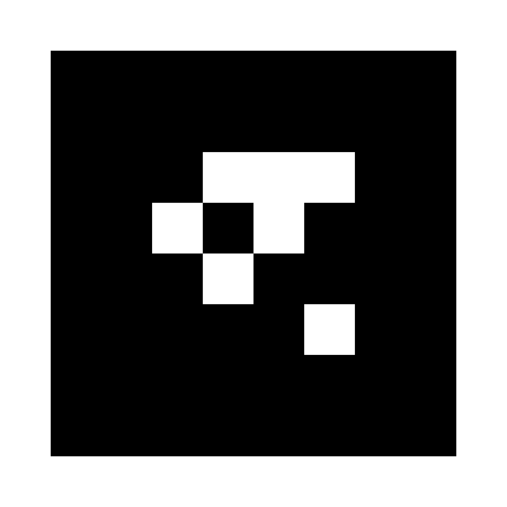

Help |
| Lap | Time | Split |
|---|
AR lap tracker is a web tool for tracking laps in FPV drone racing by marking finish line with AR markers/QR codes and recognizing them in VTX video feed. You'll need USB OTG 5.8Ghz video receiver to use it.
How to usePrint following marker on A4 paper and place it near the finish line.
Use this pdf to print - marker MUST have white margins around it, otherwise it would be difficult to recognize. Sometimes smaller marker is better and in our tests black area 14x14cm worked well on A4 paper.
Connect USB OTG video receiver to your PC - it automatically acts as an ordinary webcam.
Input the size of marker - the length of black square's side in meters, on A4 it's usually about 17сm, so input 0.17.
When drone is near the marker and marker goes out of sight - the app assumes that pilot passed the finish gate. Configure this distance threshold. Note that some cameras have narrow FOV and can't see marker when they are too close to it.
Set min lap time to ignore cases when pilot got stuck near the finish gate for some time.
Press Start race button - the app asks you to record screen first. It is a nice feature in case you ran into problems during the race - you can always go through the record manually later. After you've selected the screen to capture - the race starts and you can take off.
When drone passes near the marker facing it - a lap should be recorded and shown in the app.
CalibrationBefore starting the race you can power your drone and point it to the marker - the app should show a blue box where it detects the marker and distance to it.
If you don't see the box - make sure your marker is clearly visible through the camera and sheet of paper is not bent - it should be straight. Marker rotation over any axis doesn't matter.
If show distance to marker is incorrect - make sure you've set marker size in settings.
Known issuesIf recording is many minutes long it may consume all memory at the moment. Will be fixed later.
Currently tested only in Chrome browser.